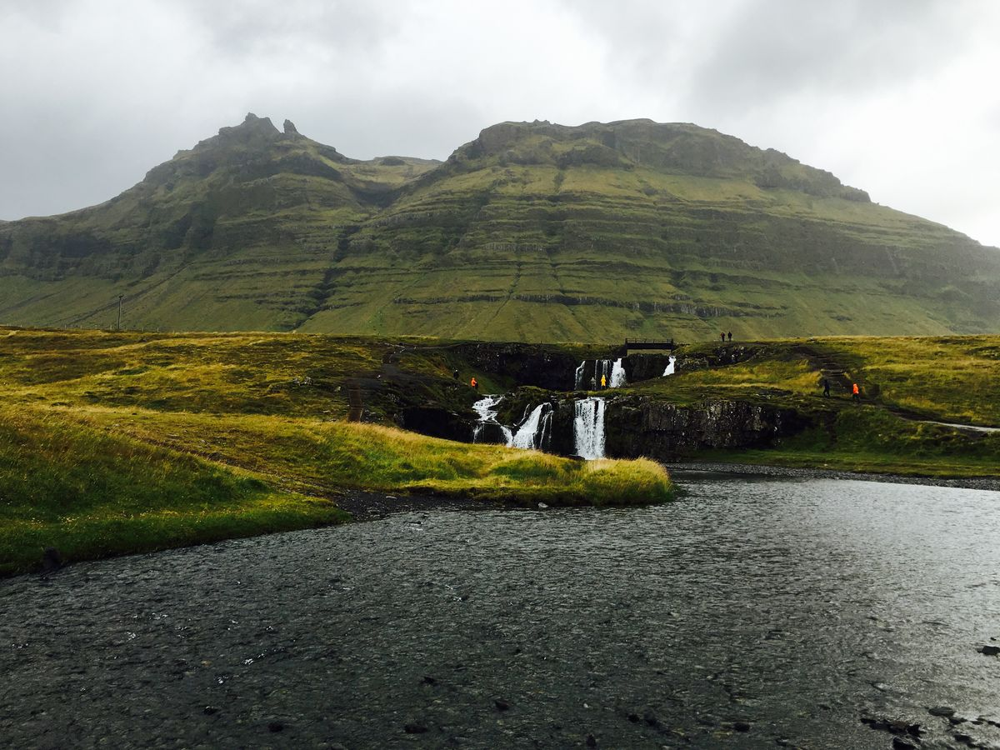

Місце народження: 11 липня, 2007 року, м. Сімферополь
Освіта: Ліцей №42 м. Києва; НТУУ «КПІ ім. Ігоря Сікорського»
Хоббі:
Улюблені фільми:
Моє улюблене місто — Хусавік, невелике містечко на півночі Ісландії.
Воно розташоване на узбережжі затоки Ск'яульфанді та відоме
як одне з найкращих місць в Ісландії для спостереження за китами. Мені
подобається Хусавік
своєю спокійною атмосферою, мальовничими краєвидами, горами та близькістю
до природи.
Особливо мене приваблює поєднання невеликого затишного міста із суворими
ісландськими пейзажами.
